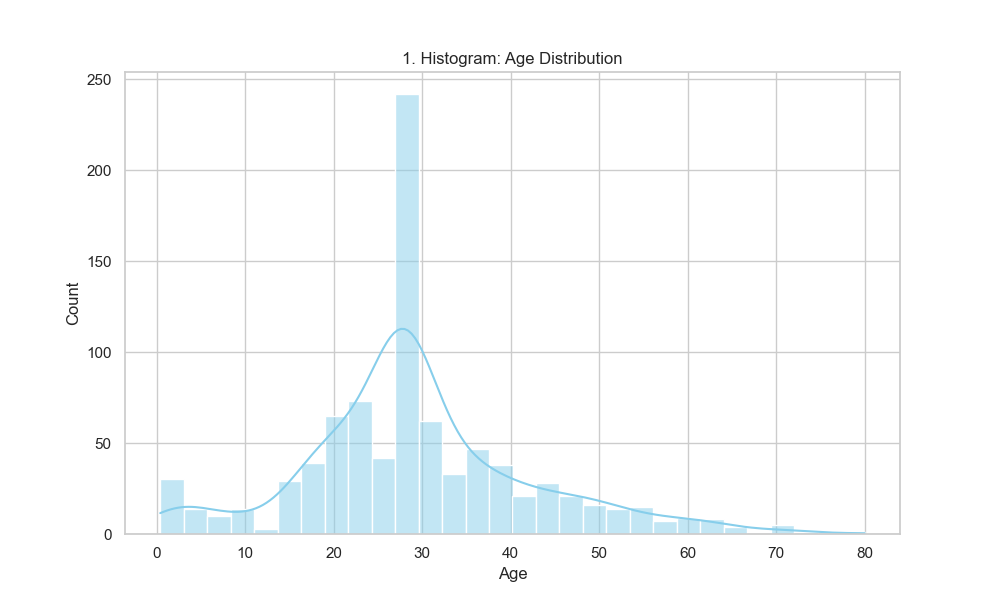
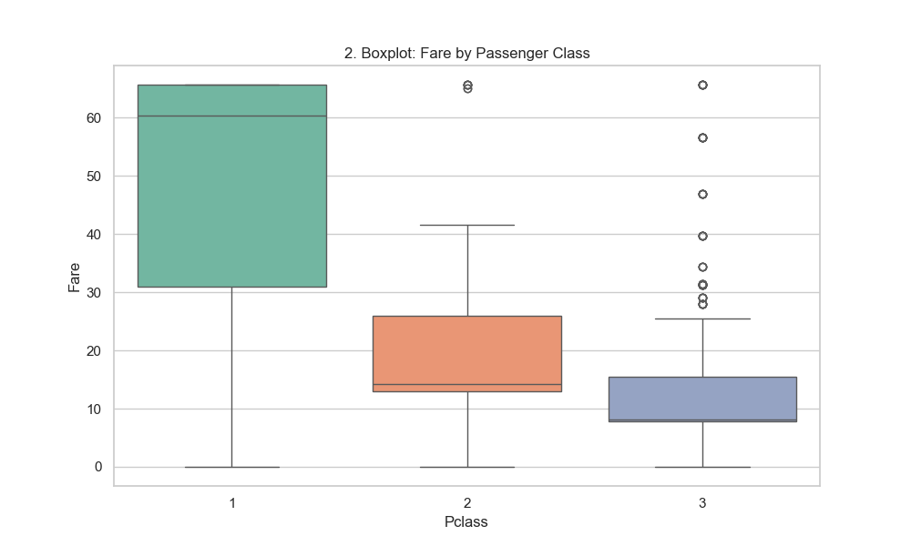
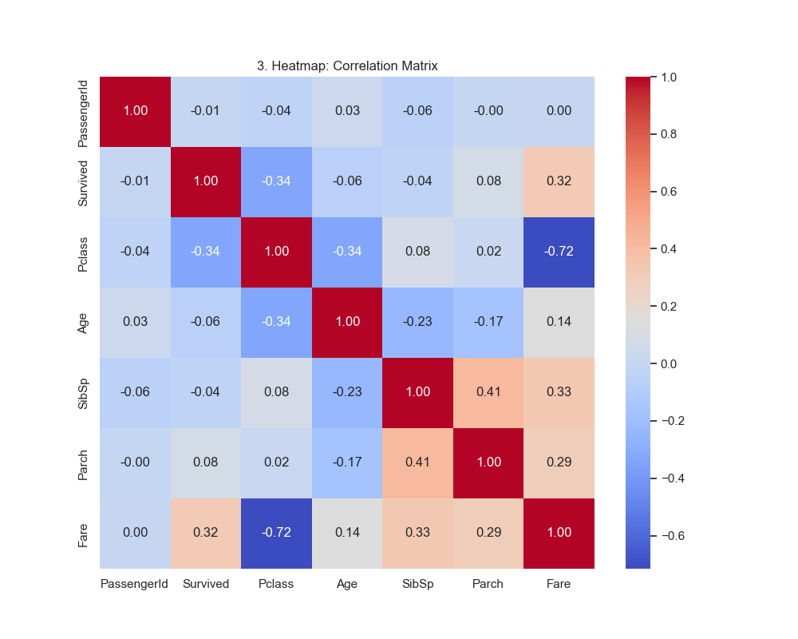
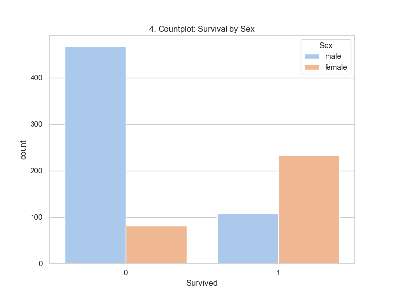
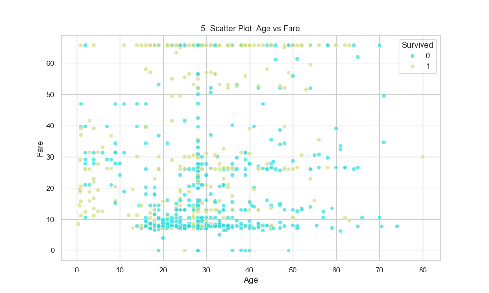
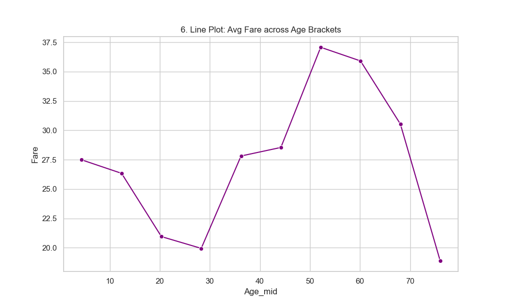
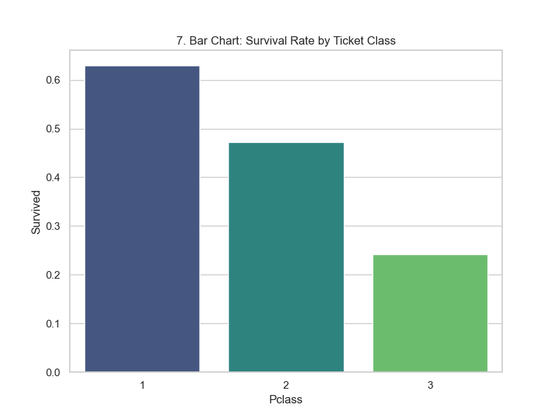
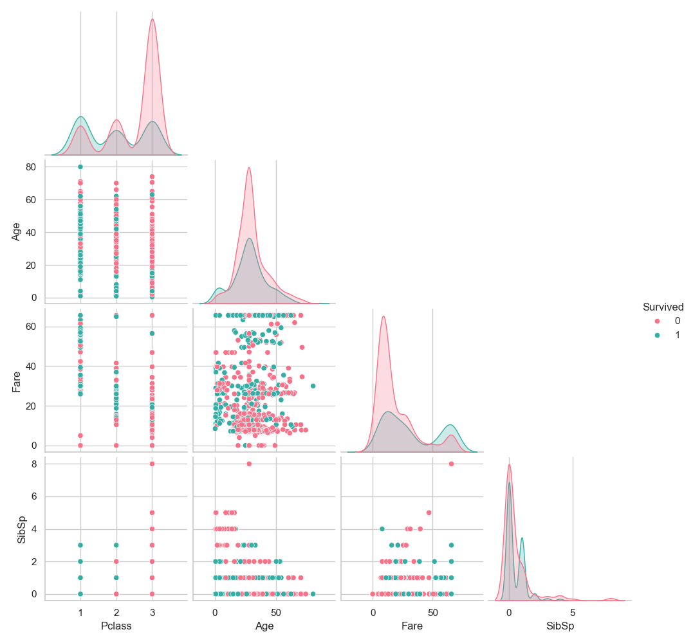

A full End-to-End Pipeline converting raw Titanic data into ML-ready formats.
891 Rows x 12 Columns
| PassengerId | Survived | Pclass | Age | SibSp | Parch | Fare | |
|---|---|---|---|---|---|---|---|
| count | 891.000000 | 891.000000 | 891.000000 | 891.000000 | 891.000000 | 891.000000 | 891.000000 |
| mean | 446.000000 | 0.383838 | 2.308642 | 29.361582 | 0.523008 | 0.381594 | 24.046813 |
| std | 257.353842 | 0.486592 | 0.836071 | 13.019697 | 1.102743 | 0.806057 | 20.481625 |
| min | 1.000000 | 0.000000 | 1.000000 | 0.420000 | 0.000000 | 0.000000 | 0.000000 |
| 25% | 223.500000 | 0.000000 | 2.000000 | 22.000000 | 0.000000 | 0.000000 | 7.910400 |
| 50% | 446.000000 | 0.000000 | 3.000000 | 28.000000 | 0.000000 | 0.000000 | 14.454200 |
| 75% | 668.500000 | 1.000000 | 3.000000 | 35.000000 | 1.000000 | 0.000000 | 31.000000 |
| max | 891.000000 | 1.000000 | 3.000000 | 80.000000 | 8.000000 | 6.000000 | 65.634400 |








| PassengerId | Survived | Pclass | Age | SibSp | Parch | Fare | |
|---|---|---|---|---|---|---|---|
| PassengerId | 1.00 | -0.01 | -0.04 | 0.03 | -0.06 | -0.00 | 0.00 |
| Survived | -0.01 | 1.00 | -0.34 | -0.06 | -0.04 | 0.08 | 0.32 |
| Pclass | -0.04 | -0.34 | 1.00 | -0.34 | 0.08 | 0.02 | -0.72 |
| Age | 0.03 | -0.06 | -0.34 | 1.00 | -0.23 | -0.17 | 0.14 |
| SibSp | -0.06 | -0.04 | 0.08 | -0.23 | 1.00 | 0.41 | 0.33 |
| Parch | -0.00 | 0.08 | 0.02 | -0.17 | 0.41 | 1.00 | 0.29 |
| Fare | 0.00 | 0.32 | -0.72 | 0.14 | 0.33 | 0.29 | 1.00 |